Données personnelles selon Opquast V5
Présentation - Données personnelles selon Opquast V5
Slide 1 sur 19 - Données personnelles
Slide 1 - Données personnelles
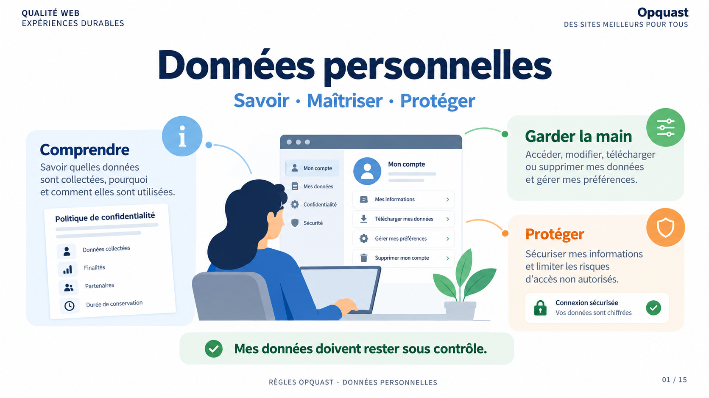
Lecture du visuel
Une utilisatrice consulte son espace personnel. Trois zones reliées à la même interface présentent les enjeux de la rubrique : comprendre grâce à une politique de confidentialité, garder la main avec les commandes du compte et protéger les informations avec une connexion sécurisée.
Textes visibles
- Données personnelles
- Savoir · Maîtriser · Protéger
- Comprendre
- Garder la main
- Protéger
- Mes données doivent rester sous contrôle.
Message à retenir
Les données personnelles doivent rester compréhensibles, maîtrisables et protégées tout au long du parcours.
Objectif
Installer une vision d’ensemble de la rubrique Données personnelles.
Avant d’entrer dans les règles, posez-vous une question : quand vous consultez votre espace personnel sur un service en ligne, quels sont vos principaux sujets de préoccupation concernant vos données ?
On retrouve généralement trois grandes craintes :
- Le flou : je ne sais pas exactement ce que le service fait de mes données ni comment agir sur elles.
- La perte de contrôle : je ne peux pas fermer facilement mon compte, récupérer mes contenus ou reprendre la main sur mes connexions.
- L’exposition : mes informations peuvent circuler, rester visibles ou devenir accessibles à une personne qui ne devrait pas les connaître.
Relier les réponses au visuel
La slide répond à ces trois préoccupations avec trois repères pédagogiques :
- Savoir, pour comprendre ;
- Maîtriser, pour garder la main ;
- Protéger, pour limiter l’exposition.
Ce regroupement nous aidera à parcourir les règles 15 à 29. Il ne constitue pas une classification officielle Opquast.
Pour chaque règle, nous partirons d’une situation concrète : quel préjudice l’utilisateur risque-t-il de subir, et que cherche alors à garantir la règle ?
Message à retenir
Les données personnelles doivent rester compréhensibles, maîtrisables et protégées tout au long du parcours.
Slide 2 - Commencer par le préjudice utilisateur
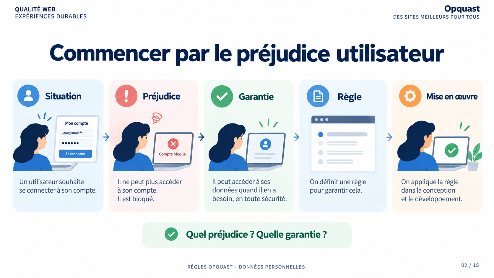
Lecture du visuel
Une progression horizontale en cinq étapes part d’une situation de connexion, montre le préjudice d’un compte bloqué, formule la garantie d’un accès sécurisé, puis conduit à la règle et à sa mise en œuvre dans la conception et le développement.
Textes visibles
- Commencer par le préjudice utilisateur
- Situation
- Préjudice
- Garantie
- Règle
- Mise en œuvre
- Quel préjudice ? Que cherche à garantir la règle ?
Message à retenir
Avant de mémoriser une règle, comprendre ce que l'utilisateur risque de subir et ce que la règle cherche à préserver.
Objectif
Installer une méthode de lecture qui part de l’expérience utilisateur avant d’arriver à la règle.
Imaginez la situation suivante : vous avez oublié votre mot de passe et le service ne propose aucun moyen clair de le réinitialiser. Que subissez-vous concrètement ?
Vous perdez l’accès à votre compte et à vos contenus. Vous ne savez pas si le blocage vient de vous ou du service, ni comment reprendre votre parcours.
De la situation à la mise en œuvre
- Situation : une personne ne parvient plus à accéder à son espace personnel.
- Préjudice : elle reste bloquée et peut renoncer au service ou créer inutilement un second compte.
- Garantie : elle doit pouvoir retrouver son accès sans exposer d’information sur son compte.
- Règle : la règle 204 prévoit la réinitialisation du mot de passe. La règle 26 demande que les réponses ne révèlent pas si le compte existe.
- Mise en œuvre : proposer un lien « Mot de passe oublié ? » près du formulaire de connexion, permettre la création d’un nouveau mot de passe et afficher une réponse neutre, par exemple : « Si un compte existe pour cette adresse, un e-mail a été envoyé. »
Le réflexe à acquérir
Ne commencez pas par mémoriser un numéro. Posez-vous d’abord deux questions :
- Quel préjudice l’utilisateur subit-il si rien n’est prévu ?
- Que cherche à garantir la règle ?
La règle devient alors la réponse à un problème compris, et non une consigne isolée.
Message à retenir
Situation. Préjudice. Garantie. Règle. Mise en œuvre.
Slide 3 - L'information doit être trouvable et utile
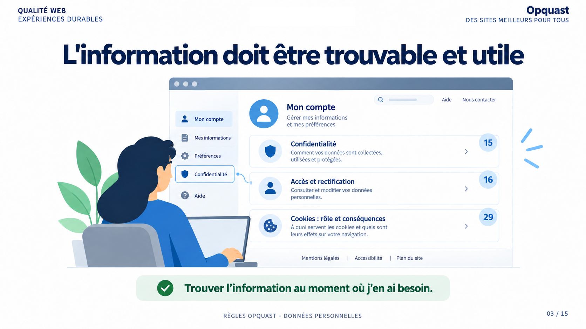
Lecture du visuel
Une utilisatrice consulte la rubrique Confidentialité de son compte. Trois accès donnent la politique de confidentialité, la procédure d’accès et de rectification, puis le rôle des cookies et leurs conséquences, associés aux règles 15, 16 et 29.
Textes visibles
- L'information doit être trouvable et utile
- Confidentialité
- Accès et rectification
- Cookies : rôle et conséquences
- 15
- 16
- 29
- Trouver l'information au moment où j'en ai besoin.
Message à retenir
Informer ne suffit pas : l'utilisateur doit pouvoir retrouver l'information, savoir où agir et comprendre les conséquences liées aux cookies.
Objectif
Faire comprendre que la transparence ne consiste pas seulement à publier un texte : l’information doit être trouvable, actionnable et compréhensible.
Imaginez que vous arriviez directement sur une page interne d’un site. Vous voulez savoir ce qu’il advient de vos données, corriger une erreur dans votre profil ou comprendre ce qui se passera si vous refusez les cookies. Où trouvez-vous les réponses ?
Si le service ne vous donne aucun chemin clair, l’information existe peut-être quelque part, mais elle ne vous aide pas à agir.
Trois besoins, trois règles
- Trouver l’information - règle 15 : la politique de confidentialité doit être disponible depuis toutes les pages. Un lien permanent, souvent placé dans le pied de page, évite que l’utilisateur dépende de son point d’entrée dans le site.
- Savoir comment agir - règle 16 : la procédure d’accès et de rectification doit indiquer une démarche ou un moyen de contact. Sans cette indication, le droit reste théorique et l’utilisateur demeure bloqué. Opquast vérifie ici la présence de la procédure, pas l’efficacité de son traitement interne.
- Comprendre les conséquences - règle 29 : le service doit expliquer l’objectif des cookies et ce que leur désactivation peut limiter. Il ne s’agit pas de convaincre l’utilisateur de les accepter, mais de lui permettre d’anticiper les effets de son choix.
Le réflexe à acquérir
Une page juridique ne suffit pas si elle est difficile à retrouver, si elle n’indique pas comment exercer ses droits ou si elle laisse l’utilisateur décider sans comprendre les conséquences.
Message à retenir
Une information utile se trouve, indique comment agir et explique les conséquences.
Slide 4 - Les données vivent avant, pendant et après la visite
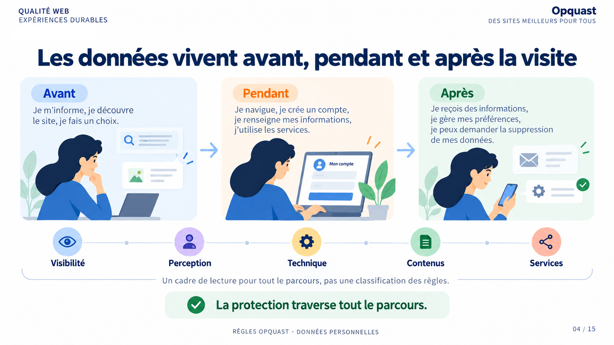
Lecture du visuel
La même personne est représentée avant, pendant et après sa visite : elle découvre le service, crée et utilise son compte, puis continue de recevoir des informations et de gérer ses préférences. Les repères VPTCS couvrent visibilité, perception, technique, contenus et services.
Textes visibles
- Les données vivent avant, pendant et après la visite
- Avant
- Pendant
- Après
- Visibilité
- Perception
- Technique
- Contenus
- Services
- La protection traverse tout le parcours.
Message à retenir
La protection des données traverse tout le parcours utilisateur.
Objectif
Élargir le regard : la protection des données ne se joue pas uniquement au moment où l’utilisateur remplit un formulaire ou saisit son mot de passe.
À quel moment commence-t-elle, et à quel moment s’arrête-t-elle ?
Si l’on répond « pendant la visite », on oublie tout ce qui prépare l’entrée dans le service et tout ce qui continue après la fermeture de la page.
VPTCS comme grille de lecture
VPTCS est un modèle créé par Élie Sloïm et Éric Gateau pour représenter cinq exigences de l’expérience utilisateur. Ce n’est ni une règle Opquast ni, à proprement parler, un modèle du cycle de vie des données. Nous l’utilisons ici comme une grille chronologique appliquée à la vie privée.
- Avant - Visibilité : l’expérience commence au moment où la personne rencontre et identifie le service, avant même d’utiliser son interface.
- Pendant - Perception, Technique et Contenus : la personne doit comprendre les choix qui lui sont proposés, transmettre ses informations dans un environnement qui fonctionne de manière sûre et trouver des explications utiles sur leur traitement.
- Après - Services : la relation continue une fois la page fermée. La personne peut encore recevoir des messages, gérer ses préférences, récupérer ses contenus ou fermer son compte.
Le préjudice à éviter
Si la protection est traitée comme une simple étape du formulaire, des angles morts apparaissent : une information incompréhensible pendant la visite, une transmission mal protégée ou un compte impossible à maîtriser dans la durée.
La réponse ne dépend donc pas d’une page unique ni d’un seul métier. Elle doit rester cohérente d’un bout à l’autre de l’expérience.
Message à retenir
La protection des données traverse tout le parcours utilisateur : avant, pendant et après la visite.
Slide 5 - Le tiers peut être proposé, jamais imposé
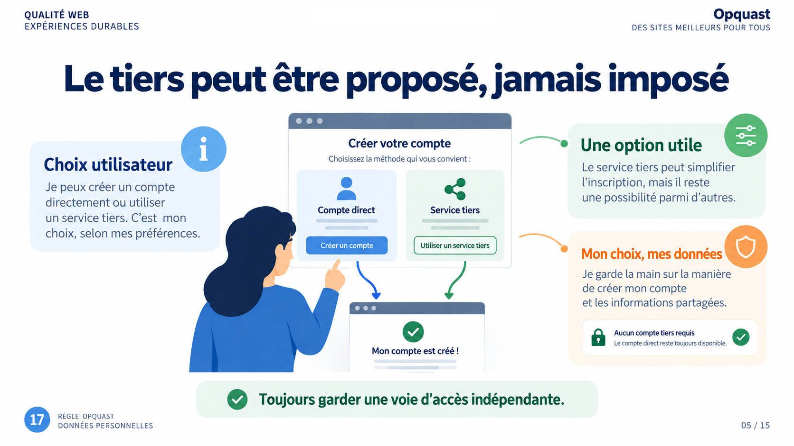
Lecture du visuel
Une utilisatrice choisit entre la création directe d’un compte et le recours à un service tiers. Les deux chemins mènent au même compte, tandis que les panneaux rappellent que le tiers est une option et qu’une voie indépendante reste disponible.
Textes visibles
- Le tiers peut être proposé, jamais imposé
- Compte direct
- Service tiers
- Choix utilisateur
- 17
- Toujours garder une voie d'accès indépendante.
Message à retenir
L'utilisateur doit pouvoir créer son compte sans dépendre obligatoirement d'un système d'identification tiers.
Objectif
Faire distinguer un raccourci pratique d’une dépendance imposée.
Imaginez que vous vouliez créer un compte et que le service ne propose qu’un bouton « Continuer avec un service tiers ». Vous ne possédez pas ce compte, vous ne souhaitez pas relier vos identités ou le fournisseur est momentanément indisponible. Pouvez-vous encore accéder au service ?
Si la réponse est non, ce qui devait simplifier le parcours devient une barrière.
Situation, préjudice et garantie
- Situation : un service tiers est proposé pour accélérer la création du compte. Ce choix peut être pratique et la règle ne l’interdit pas.
- Préjudice : lorsqu’il constitue l’unique voie, la personne qui ne peut pas ou ne veut pas l’utiliser reste exclue. L’accès au service dépend aussi de la disponibilité et des décisions d’un acteur extérieur.
- Garantie : la règle 17 exige qu’un compte puisse également être créé sans système d’identification tiers, avec un identifiant et un mot de passe propres au service.
Mise en œuvre
Le visuel montre deux chemins vers le même service :
- une création de compte directe, clairement disponible ;
- une identification tierce présentée comme une possibilité supplémentaire.
La règle ne demande pas de supprimer les boutons de connexion tierce et ne prescrit pas toute l’architecture technique. Elle contrôle un résultat simple : l’utilisateur conserve une voie de création de compte indépendante.
Message à retenir
Un tiers peut simplifier l’accès, mais il ne doit jamais le conditionner.
Slide 6 - Créer un compte, puis vérifier qui agit
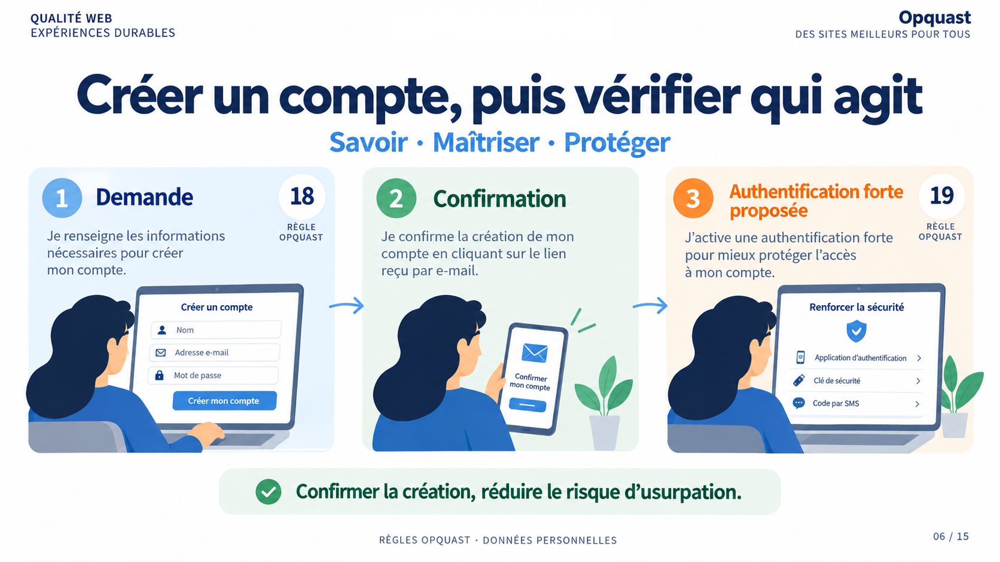
Lecture du visuel
Une progression en trois étapes montre la demande de création d’un compte, sa confirmation par un lien reçu par courriel, puis la proposition d’une authentification forte à l’aide d’une application, d’une clé de sécurité ou d’un code par SMS. Les règles 18 et 19 encadrent ces deux protections.
Textes visibles
- Créer un compte, puis vérifier qui agit
- Demande
- Confirmation
- Authentification forte proposée
- 18
- 19
- Confirmer la création, réduire le risque d'usurpation.
Message à retenir
La création doit être confirmée, puis le compte doit pouvoir bénéficier d'une authentification renforcée.
Objectif
Distinguer deux protections qui interviennent à deux moments différents : confirmer la création du compte, puis renforcer les connexions suivantes.
Imaginez que quelqu’un utilise votre adresse électronique, volontairement ou par erreur, pour ouvrir un compte. Le simple envoi du formulaire doit-il suffire à activer ce compte ?
Et plus tard, si votre mot de passe est compromis, doit-il suffire à ouvrir votre espace privé ?
Deux moments, deux risques
- Confirmer la création - règle 18 : après la demande, le service envoie un message à l’adresse électronique indiquée. Le compte n’est activé qu’à partir de ce message. Cela réduit le risque qu’une personne soit inscrite à son insu.
- Renforcer la connexion - règle 19 : le service propose une authentification à double facteur ou une autre authentification forte. Si le mot de passe est compromis, une protection supplémentaire limite le risque de prise de contrôle.
Lire les trois étapes du visuel
- Demande : les informations sont saisies, mais le compte n’est pas encore actif.
- Confirmation : un lien reçu par courrier électronique permet d’activer le compte.
- Authentification forte proposée : l’utilisateur peut renforcer ses connexions avec le mécanisme prévu par le service.
La confirmation ne prouve pas l’identité civile de la personne. Elle prouve qu’elle peut agir depuis la boîte électronique indiquée et qu’elle confirme la création. De même, l’authentification forte réduit le risque d’usurpation sans rendre le compte invulnérable.
Point de vocabulaire
Parlons ici de confirmation de création de compte. L’expression « double opt-in » est souvent associée à l’abonnement à une lettre d’information et risque de mélanger deux usages différents.
Message à retenir
Confirmer la création. Renforcer l’accès.
Slide 7 - Une organisation, un jeu d'identifiants
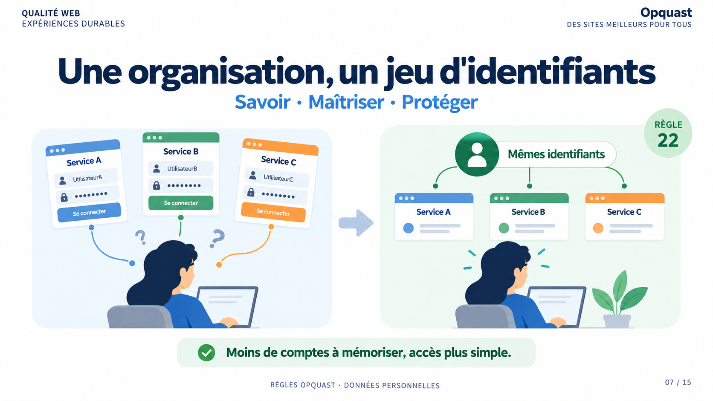
Lecture du visuel
À gauche, trois services d’une même organisation demandent chacun un identifiant différent et créent de la confusion. À droite, un seul jeu d’identifiants donne accès aux trois services, conformément à la règle 22.
Textes visibles
- Une organisation, un jeu d'identifiants
- Service A
- Service B
- Service C
- Mêmes identifiants
- 22
- Moins de comptes à mémoriser, accès plus simple.
Message à retenir
Quand une même entité propose plusieurs services privés, l'utilisateur doit pouvoir employer les mêmes identifiants.
Objectif
Montrer que l’utilisateur ne devrait pas subir la fragmentation technique des services proposés par une même organisation.
Vous créez un compte pour accéder à un espace client. Quelques minutes plus tard, la boutique ou le support vous demande un autre compte. Quel identifiant allez-vous essayer en premier ?
Cette hésitation paraît minime, mais elle se répète : échec de connexion, doute sur le mot de passe, réinitialisation inutile, puis découverte qu’il fallait utiliser un autre compte.
Comparer les deux côtés du visuel
- À gauche : les services A, B et C utilisent chacun leurs propres identifiants. L’utilisateur doit mémoriser quel compte ouvre quel espace.
- À droite : le même jeu d’identifiants fonctionne pour les trois services. Le parcours devient prévisible : l’utilisateur sait avec quoi se connecter.
Situation, préjudice et garantie
- Situation : plusieurs services authentifiés sont proposés dans un même périmètre.
- Préjudice : la multiplication des comptes augmente la charge de mémorisation, les erreurs de connexion et les demandes de réinitialisation. Elle peut aussi encourager de mauvaises pratiques de mots de passe, sans que cet effet soit systématique.
- Garantie : la règle 22 permet d’utiliser le même identifiant et le même mot de passe pour tous ces services et, le cas échéant, les mêmes moyens d’authentification renforcée.
Point de vigilance
Même identifiant ne signifie pas nécessairement connexion automatique. Un système SSO peut être une solution, mais la règle ne l’impose pas. Elle ne demande pas non plus de fusionner tous les comptes d’un groupe : elle vérifie la cohérence des accès entre les services proposés dans le périmètre examiné.
Message à retenir
Plusieurs services, un même jeu d’identifiants.
Slide 8 - Sortir sans perdre ses contenus
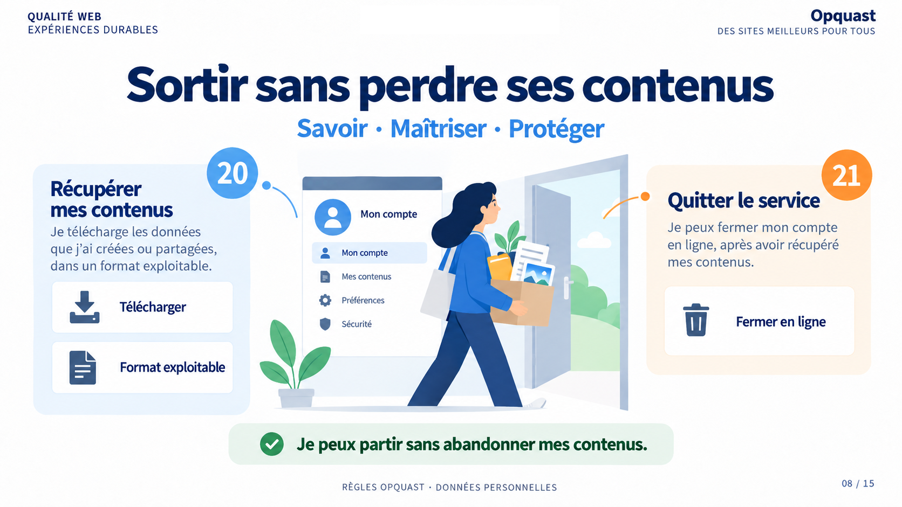
Lecture du visuel
Une utilisatrice quitte le service avec un carton contenant ses fichiers. Le panneau de gauche propose de télécharger les données créées ou partagées dans un format exploitable ; celui de droite permet de fermer le compte en ligne. Les badges 20 et 21 accompagnent ces deux actions.
Textes visibles
- Sortir sans perdre ses contenus
- Télécharger
- Format exploitable
- Fermer en ligne
- 20
- 21
- Je peux partir sans abandonner mes contenus.
Message à retenir
Un compte ouvert en ligne doit pouvoir être fermé en ligne, et les contenus personnels doivent pouvoir être sauvegardés.
Objectif
Faire comprendre qu’un service de qualité prépare aussi le départ de l’utilisateur. Il permet de récupérer ce qui a été créé, puis de fermer la relation en ligne.
Quand vous déménagez, vous emportez vos affaires avant de rendre les clés. Pourquoi devrait-on abandonner ses documents, ses images ou ses textes lorsqu’on quitte un service numérique ?
Le visuel reprend cette idée : l’utilisatrice part avec son carton de fichiers.
Deux actions pour partir proprement
- Télécharger - règle 21 : lorsqu’un espace personnel permet de saisir ou de créer des contenus, ces contenus doivent pouvoir être exportés dans un format courant, standard ou dont les spécifications sont publiques. L’utilisateur peut ainsi les archiver, les réutiliser et éviter une nouvelle saisie.
- Fermer en ligne - règle 20 : si le compte ou l’abonnement a été ouvert en ligne, sa clôture ou la demande de clôture doit également pouvoir être effectuée en ligne, au moyen d’un processus similaire.
L’ordre représenté est utile : je récupère d’abord mes contenus, puis je ferme mon compte.
Les préjudices évités
Sans téléchargement, l’utilisateur doit multiplier les copier-coller, les captures d’écran ou les ressaisies, avec le risque de perdre une partie de son travail.
Sans procédure de fermeture en ligne, il doit chercher un contact, téléphoner ou envoyer un courrier pour mettre fin à un compte créé depuis son navigateur. La difficulté de sortie crée alors un sentiment de captivité.
Point de vigilance
La règle 21 porte sur les contenus personnellement saisis ou créés. Elle ne garantit pas à elle seule l’export de toutes les données personnelles détenues par le service.
De même, « par le même moyen » ne signifie pas nécessairement « en un clic ». La règle exige que la démarche puisse rester en ligne.
Message à retenir
Je récupère mes contenus, puis je ferme mon compte en ligne.
Slide 9 - Garder la main sur son compte
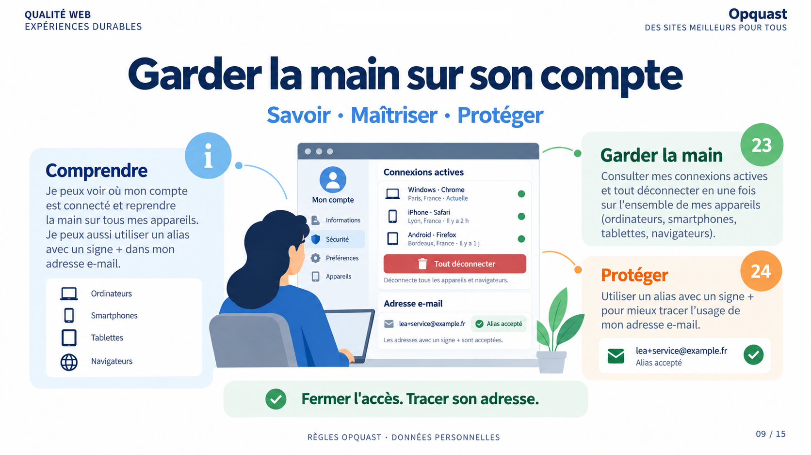
Lecture du visuel
L’écran de sécurité d’un compte liste plusieurs connexions actives et propose de tout déconnecter. Un second réglage accepte une adresse électronique utilisant le signe +. Les panneaux relient ces moyens de maîtrise aux règles 23 et 24.
Textes visibles
- Garder la main sur son compte
- Connexions actives
- Tout déconnecter
- lea+service@example.fr
- Alias accepté
- 23
- 24
- Fermer l'accès. Tracer son adresse.
Message à retenir
L'utilisateur doit pouvoir fermer ses connexions actives et utiliser une adresse e-mail dédiée avec le signe +.
Objectif
Montrer deux moyens très concrets de garder la main sur son compte : fermer les accès encore ouverts et utiliser une adresse électronique dédiée.
Vous consultez la liste de vos connexions et reconnaissez un ancien téléphone que vous n’avez plus. Vous déconnecter uniquement de l’appareil que vous utilisez suffit-il à protéger votre compte ?
Non. La session de l’ancien téléphone resterait active. C’est précisément le problème illustré en haut du visuel.
Deux outils, deux préjudices évités
- Tout déconnecter - règle 23 : le service doit permettre de désactiver globalement toutes les connexions actives sur les différents appareils. Sans cette action, une session oubliée, perdue ou compromise peut continuer à donner accès aux données et aux actions du compte.
- Accepter le signe + - règle 24 : une adresse comme
lea+service@example.frdoit être acceptée et rester fonctionnelle. L’utilisateur peut ainsi réserver un alias à un service, filtrer ses messages et repérer plus facilement où cette adresse a été utilisée.
Lire le visuel
En haut, la liste des appareils rend les accès visibles et le bouton « Tout déconnecter » permet de les révoquer. En bas, la mention « Alias accepté » montre qu’un contrôle de saisie ne rejette pas une adresse à cause du signe +.
Ces deux règles traitent de situations différentes, mais elles partagent le même principe : ne pas retirer à l’utilisateur un moyen légitime de contrôle.
Points de vigilance
Pour la règle 23, un simple bouton qui ferme uniquement la session courante ne suffit pas : le contrôle Opquast porte sur la désactivation globale des connexions actives.
Pour la règle 24, l’alias peut aider à retracer une diffusion, mais il ne prouve pas à lui seul qu’un service a transmis ou revendu l’adresse. Côté technique, éviter les validations trop restrictives et tester tout le parcours : saisie, création du compte, connexion et réception des messages.
Message à retenir
Fermer tous les accès. Accepter le +. Garder la main.
Slide 10 - Maîtriser ce que le site cible apprend d'où je viens
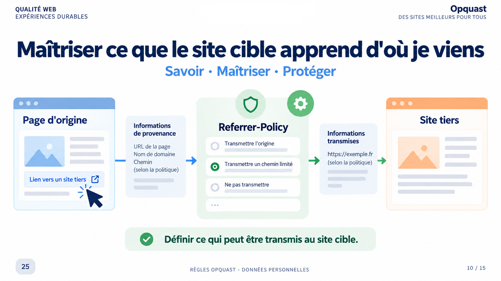
Lecture du visuel
Un flux part d’une page d’origine vers un site tiers. Entre les deux, le réglage Referrer-Policy permet de transmettre l’origine, un chemin limité ou aucune information ; un panneau montre ensuite les informations effectivement transmises selon la politique choisie.
Textes visibles
- Maîtriser ce que le site cible apprend d'où je viens
- Page d'origine
- Referrer-Policy
- Site tiers
- 25
- Définir ce qui peut être transmis au site cible.
Message à retenir
Le serveur doit maîtriser les informations de provenance communiquées lorsqu'un utilisateur suit un lien.
Objectif
Rendre visible une transmission qui se produit sans action supplémentaire de l’utilisateur : lorsqu’une requête part vers un autre site, elle peut emporter une information sur la page d’origine.
Vous consultez la page /espace-personnel/mes-demandes, puis vous cliquez sur un lien vers un service externe. Que peut apprendre le site cible : l’adresse complète, seulement l’origine du site ou rien du tout ?
La réponse dépend de la politique définie par le serveur. C’est précisément le rôle de Referrer-Policy.
Suivre le flux du visuel
- Page d’origine : le navigateur prépare la requête vers le site tiers ou vers une ressource externe.
- Referrer-Policy : la politique décide quelle information de provenance peut accompagner cette requête.
- Site tiers : il reçoit uniquement ce que la politique autorise, de l’absence de referrer jusqu’à l’origine ou, selon le contexte, une adresse plus précise.
Situation, préjudice et garantie
- Situation : un utilisateur suit un lien externe ou une page charge une ressource hébergée par un tiers.
- Préjudice : sans politique explicite, une information de provenance plus précise que nécessaire peut être transmise puis conservée dans les journaux du tiers. Elle peut révéler le contexte de navigation ou le nom d’une page privée.
- Garantie : la règle 25 demande que chaque page envoie l’en-tête HTTP
Referrer-Policy. Les valeurs retenues par Opquast, par ordre de préférence, sontno-referrer,same-origin,strict-originetstrict-origin-when-cross-origin.
Points de vigilance
La règle ne demande pas que tous les sites choisissent systématiquement no-referrer. Elle demande une décision explicite parmi les politiques admises, afin que la transmission ne dépende pas d’un réglage implicite.
Cette politique constitue une protection supplémentaire, mais elle ne corrige pas une URL mal conçue. Une donnée sensible ne doit jamais être placée dans l’URL.
Message à retenir
Avant qu’une requête quitte la page, décider quelle provenance peut l’accompagner.
Slide 11 - Aider sans révéler si le compte existe
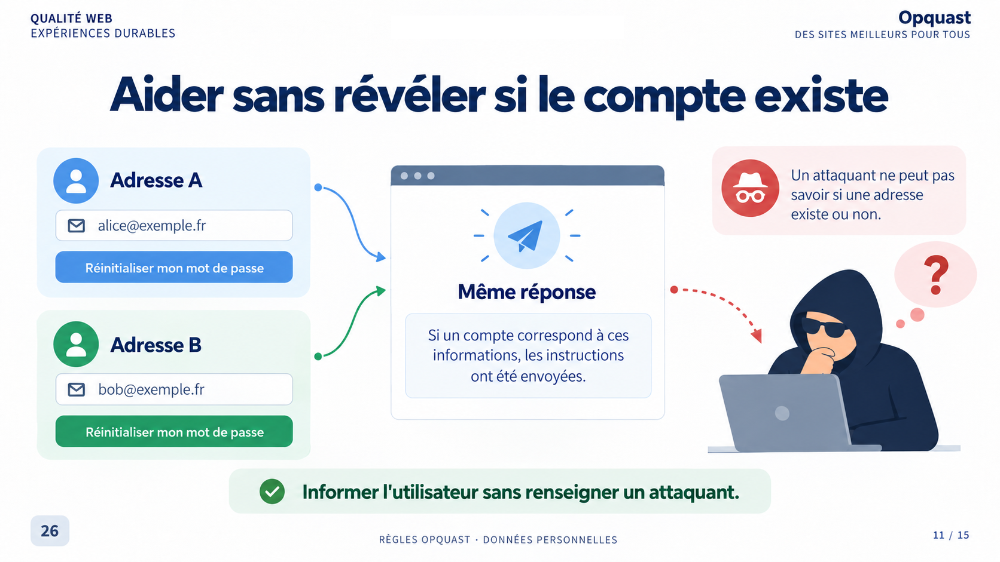
Lecture du visuel
Deux demandes de réinitialisation utilisant des adresses différentes convergent vers le même message : si un compte correspond aux informations, les instructions ont été envoyées. À droite, une personne malveillante ne peut pas déduire si l’adresse testée possède un compte.
Textes visibles
- Aider sans révéler si le compte existe
- Adresse A
- Adresse B
- Même réponse
- Si un compte correspond à ces informations, les instructions ont été envoyées.
- 26
- Informer l'utilisateur sans renseigner un attaquant.
Message à retenir
Les réponses de création, connexion ou récupération ne doivent pas permettre de déduire l'existence d'un compte.
Objectif
Faire comprendre qu’un message d’assistance peut devenir un outil d’énumération de comptes s’il confirme qu’une adresse est connue ou inconnue.
Vous testez deux adresses dans un formulaire de récupération. Le site répond « compte inconnu » pour la première et « message envoyé » pour la seconde. Qu’a-t-il révélé avant même toute authentification ?
Il vient de confirmer que la seconde adresse possède un compte. Sur un service de santé, de rencontre ou de recherche d’emploi, cette simple information peut déjà porter atteinte à la vie privée.
Lire le visuel
Les adresses A et B suivent deux parcours parallèles, mais l’écran affiche la même réponse : « Si un compte correspond à ces informations, les instructions ont été envoyées. »
L’utilisateur légitime sait quoi faire ensuite. La personne qui teste une liste d’adresses, elle, ne reçoit aucun indice sur l’existence des comptes.
Trois moments à contrôler
- Création : éviter « cette adresse est déjà utilisée ». Orienter vers la récupération si la personne possède peut-être déjà un compte.
- Connexion : répondre « identifiants incorrects » plutôt que préciser que seul le mot de passe est faux.
- Récupération ou verrouillage : ne confirmer ni l’existence du compte, ni son verrouillage. Indiquer la marche à suivre de manière conditionnelle.
Préjudice et garantie
Une réponse différenciée permet de constituer une liste de comptes valides. Cette liste peut ensuite faciliter des tentatives ciblées d’hameçonnage, d’usurpation ou de réutilisation de mots de passe compromis.
La règle 26 garantit que les formulaires publics ne révèlent pas cette information par leurs messages. Elle réduit ce canal d’énumération, sans garantir à elle seule l’anonymat de l’utilisateur sur l’ensemble du service.
Point de vigilance
Un message neutre ne doit pas être inutile : il explique toujours la prochaine étape sans confirmer l’existence du compte. Harmoniser aussi les temps de réponse et les codes HTTP peut renforcer la protection contre des déductions techniques, mais cela dépasse le contrôle explicite de cette règle.
Message à retenir
Aider sur la marche à suivre, jamais sur l’existence du compte.
Slide 12 - Les données sensibles doivent circuler sans s'exposer
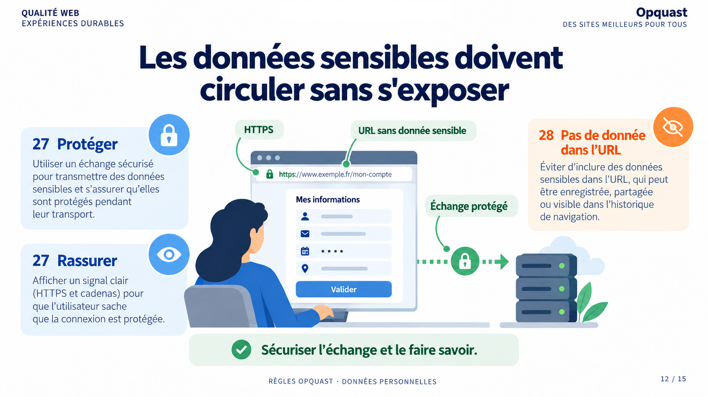
Lecture du visuel
Une utilisatrice transmet des informations depuis une page HTTPS vers un serveur par un échange protégé. Les panneaux de la règle 27 demandent de sécuriser et de signaler cet échange ; le panneau de la règle 28 rappelle qu’aucune donnée sensible ne doit apparaître dans l’URL.
Textes visibles
- Les données sensibles doivent circuler sans s'exposer
- HTTPS
- Échange protégé
- URL sans donnée sensible
- 27
- 28
- Sécuriser l'échange et le faire savoir.
Message à retenir
Les échanges sensibles doivent être protégés et signalés comme tels, et les données sensibles doivent rester hors des URL.
Objectif
Faire distinguer deux risques complémentaires : une donnée peut être interceptée pendant son transport ou laisser des traces parce qu’elle apparaît dans l’URL.
Vous voyez cette adresse : https://service.example/connexion?password=secret. Le protocole HTTPS suffit-il à rendre cette transmission acceptable ?
Non. HTTPS protège l’échange sur le réseau, mais le mot de passe reste visible dans l’URL et peut être conservé à plusieurs endroits. Il faut donc deux barrières.
Première barrière : sécuriser l’échange - règle 27
Les pages qui échangent des identifiants, des données personnelles, bancaires ou biométriques doivent utiliser HTTPS. L’utilisateur doit pouvoir reconnaître ce contexte sécurisé grâce à l’adresse en https:// ou à l’indicateur fourni par le navigateur.
Sans chiffrement, une personne présente sur le parcours réseau peut lire ou modifier les données échangées. Avec HTTPS et un certificat valide, leur confidentialité et leur intégrité sont protégées pendant le transport. Cela ne garantit pas, en revanche, ce que le service fera des données après leur réception.
Le contrôle consiste notamment à saisir l’adresse en HTTP et à vérifier la redirection immédiate vers HTTPS. Au minimum, toutes les pages qui échangent des données sensibles doivent être sécurisées.
Deuxième barrière : garder les données hors de l’URL - règle 28
Une URL peut se retrouver dans l’historique du navigateur, les favoris, les journaux des serveurs, les outils de mesure ou les informations de provenance. Un mot de passe, une donnée personnelle ou un identifiant de session ne doit donc jamais y apparaître.
Pour un formulaire sensible, utiliser POST et HTTPS. Vérifier aussi les liens générés et les identifiants de session, y compris lorsque les cookies sont désactivés.
Points de vigilance
POST ne chiffre pas les données : sans HTTPS, le corps de la requête reste interceptable. Inversement, HTTPS ne rend pas acceptable une donnée sensible placée dans l’URL.
Un cadenas indique un transport protégé vers un domaine donné. Il ne certifie pas que ce domaine est digne de confiance ni que les données seront correctement stockées.
Message à retenir
Deux questions : le transport est-il chiffré et la donnée est-elle absente de l’URL ?
Slide 13 - La protection des données est une responsabilité collective
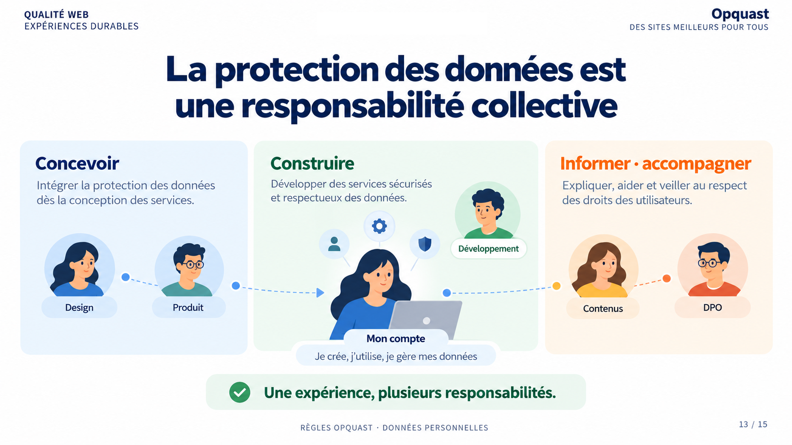
Lecture du visuel
Une trajectoire relie trois zones autour d’une utilisatrice et de son compte. Le design et le produit conçoivent la protection, le développement construit des services sécurisés, puis les contenus et le DPO informent, accompagnent et veillent au respect des droits.
Textes visibles
- La protection des données est une responsabilité collective
- Concevoir
- Construire
- Informer · accompagner
- Design
- Produit
- Développement
- Contenus
- DPO
- Une expérience, plusieurs responsabilités.
Message à retenir
Plusieurs métiers interviennent sur la même expérience utilisateur.
Objectif
Faire passer d’une question de territoire, « à qui appartient la protection des données ? », à une question de contribution : « que doit produire chaque métier pour protéger le même parcours utilisateur ? »
La politique de confidentialité est claire, mais la fermeture du compte est introuvable. Les échanges sont en HTTPS, mais le formulaire de récupération révèle qu’une adresse possède un compte. Dans ces situations, quel métier a échoué ?
Aucun métier ne peut répondre seul. L’utilisateur ne voit ni les équipes ni les silos : il vit une seule expérience.
Une expérience, trois contributions
- Concevoir - design et produit : transformer les besoins en parcours et en critères vérifiables. Prévoir dès le cadrage la création, la récupération, l’export, la fermeture du compte et les choix proposés à l’utilisateur.
- Construire - développement : implémenter et tester les mécanismes attendus. Sécuriser les échanges, gérer les sessions, accepter les adresses valides, maîtriser les URL et produire des réponses qui ne révèlent pas l’existence d’un compte.
- Informer et accompagner - contenus et DPO : rendre les politiques et procédures trouvables et compréhensibles, vérifier que les droits et les risques sont pris en compte, puis aider les équipes à corriger les angles morts.
Suivre une règle de bout en bout
Prenons la fermeture du compte. Le produit inscrit l’exigence dans le périmètre. Le design rend l’action repérable et prévoit la confirmation. Le développement exécute réellement la fermeture. Les contenus expliquent les conséquences et la marche à suivre. Le DPO apporte son expertise sur les droits et les risques.
Si un seul maillon manque, l’utilisateur ne peut pas exercer ce contrôle. La qualité vient donc de l’enchaînement des contributions, pas de la présence isolée d’un spécialiste.
Points de vigilance
Cette slide synthétise les règles 15 à 29 : elle ne crée pas une nouvelle règle Opquast. Le modèle VPTCS fournit une vision transversale des exigences utilisateur, mais il ne distribue pas automatiquement les tâches entre les métiers. Cette répartition doit être décidée dans chaque projet.
Responsabilité collective ne signifie pas « tout le monde, donc personne ». Pour chaque exigence, identifier un responsable, les contributeurs et la preuve attendue.
Message à retenir
Une expérience, des responsabilités partagées et des responsables identifiés.
Slide 14 - Cas pratiques
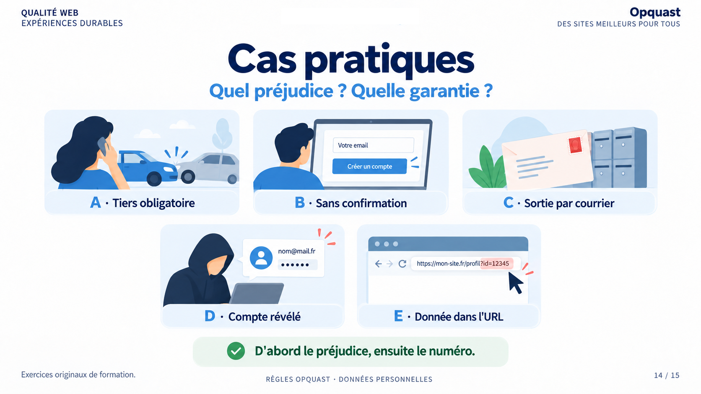
Lecture du visuel
Cinq vignettes d’exercice montrent un service tiers obligatoire, une création de compte sans confirmation, une fermeture uniquement par courrier, un compte révélé à une personne malveillante et une donnée présente dans l’URL. Le public doit partir du préjudice avant de retrouver le numéro de règle.
Textes visibles
- Cas pratiques
- Quel préjudice ? Quelle garantie ?
- A · Tiers obligatoire
- B · Sans confirmation
- C · Sortie par courrier
- D · Compte révélé
- E · Donnée dans l'URL
- Exercices originaux de formation
- D'abord le préjudice, ensuite le numéro.
Message à retenir
Partir du préjudice et de la garantie permet de retrouver la règle.
Ne cherchez pas immédiatement le numéro. Pour chaque situation, demandez d'abord ce que l'utilisateur subit, puis ce que le service devrait préserver. Le numéro vient ensuite.
Relier chaque règle à son impact : préjudices et risques
Se demander systématiquement quel préjudice subit l’utilisateur si la règle n’est pas appliquée.
Sans cette méthode, on retient des réponses mais pas la logique qui permet de les retrouver.
Ce que garantit la règle
Se demander ce que garantit la règle.
Partir du préjudice et de la garantie permet de retrouver la règle.
Mémo
D'abord le préjudice, ensuite le numéro.
Slide 15 - Je comprends, je maîtrise, je protège
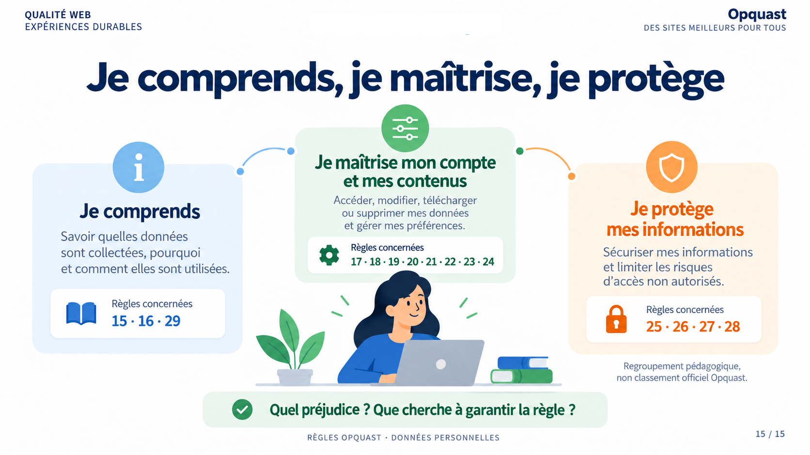
Lecture du visuel
Autour d’une utilisatrice, trois cartes regroupent pédagogiquement les règles : comprendre les usages des données avec les règles 15, 16 et 29 ; maîtriser le compte et les contenus avec les règles 17 à 24 ; protéger les informations avec les règles 25 à 28.
Textes visibles
- Je comprends, je maîtrise, je protège
- Je comprends
- 15 · 16 · 29
- Je maîtrise mon compte et mes contenus
- 17 · 18 · 19 · 20 · 21 · 22 · 23 · 24
- Je protège mes informations
- 25 · 26 · 27 · 28
- Regroupement pédagogique, non classement officiel Opquast
- Quel préjudice ? Que cherche à garantir la règle ?
Message à retenir
Les quinze règles peuvent être mémorisées à travers trois questions utilisateur.
Si vous ne retenez qu'une structure, posez trois questions. Est-ce que je comprends ce que le service fait de mes données ? Est-ce que je garde la maîtrise de mon compte et de mes contenus ? Est-ce que mes informations restent protégées quand elles circulent ? Les numéros viennent ensuite.
Relier chaque règle à son impact : préjudices et risques
Se demander systématiquement quel préjudice subit l’utilisateur si la règle n’est pas appliquée.
Sans ces règles, l'utilisateur peut ne plus savoir, ne plus maîtriser ou ne plus protéger ses données.
Ce que garantit la règle
Se demander ce que garantit la règle.
Une information accessible, une maîtrise effective du compte et des contenus, et une réduction des risques d'exposition des données.
Mémo
Je comprends. Je garde la main. Je limite l'exposition.
Slide 16 - La privacy dépasse la rubrique
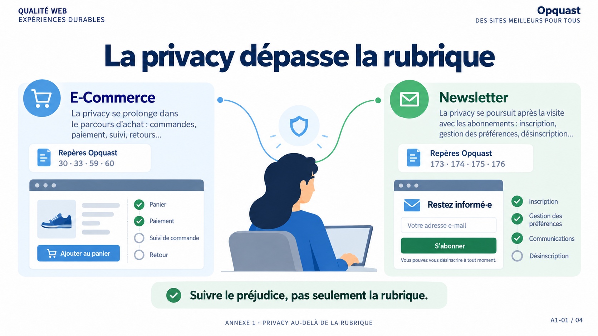
Lecture du visuel
Une utilisatrice se trouve au centre de deux parcours. À gauche, l’e-commerce couvre le panier, le paiement, le suivi et les retours avec les repères Opquast 30, 33, 59 et 60. À droite, la newsletter couvre l’inscription, les préférences, les communications et la désinscription avec les repères 173 à 176. Cette première annexe élargit la lecture des préjudices au-delà de la rubrique Données personnelles.
Textes visibles
- La privacy dépasse la rubrique
- E-Commerce
- La privacy se prolonge dans le parcours d’achat : commandes, paiement, suivi, retours…
- Repères Opquast
- 30 · 33 · 59 · 60
- Newsletter
- La privacy se poursuit après la visite avec les abonnements : inscription, gestion des préférences, désinscription…
- 173 · 174 · 175 · 176
- Suivre le préjudice, pas seulement la rubrique.
- ANNEXE 1 · PRIVACY AU-DELÀ DE LA RUBRIQUE
Message à retenir
La protection de la vie privée continue dans les parcours d’achat et d’abonnement.
La rubrique Données personnelles s’arrête à la règle 29, mais les risques pour l’utilisateur ne s’arrêtent pas là. Dans l’achat et les newsletters, on retrouve les mêmes questions : est-ce que je choisis vraiment ? Est-ce que mes données sont mémorisées avec mon accord ? Est-ce que je peux sortir facilement ? Cette annexe présente une sélection transversale, pas une liste exhaustive des règles liées à la vie privée.
Relier chaque règle à son impact : préjudices et risques
Se demander systématiquement quel préjudice subit l’utilisateur si la règle n’est pas appliquée.
Perte de choix, mémorisation non souhaitée ou difficulté à se désengager.
Ce que garantit la règle
Se demander ce que garantit la règle.
La continuité des exigences utilisateur entre les parcours d’achat et de newsletter.
Mémo
La privacy traverse les parcours.
Slide 17 - Acheter sans compte, choisir les services ajoutés
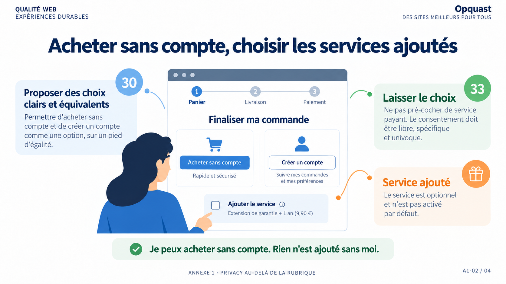
Lecture du visuel
Une étape de commande propose deux choix sur un pied d’égalité : acheter sans compte ou créer un compte. Sous ces choix, la case d’une extension de garantie payante reste vide. Les règles 30 et 33 rappellent que le compte et le service annexe ne doivent pas être imposés.
Textes visibles
- Acheter sans compte, choisir les services ajoutés
- 30
- Proposer des choix clairs et équivalents
- Acheter sans compte
- Créer un compte
- 33
- Laisser le choix
- Ne pas pré-cocher de service payant. Le consentement doit être libre, spécifique et univoque.
- Service ajouté
- Le service est optionnel et n’est pas activé par défaut.
- Ajouter le service
- Extension de garantie + 1 an (9,90 €)
- Je peux acheter sans compte. Rien n'est ajouté sans moi.
- ANNEXE 1 · PRIVACY AU-DELÀ DE LA RUBRIQUE
Message à retenir
Le compte et le service annexe sont des choix, pas des obligations cachées.
Deux barrières peuvent retirer du contrôle à l’acheteur : l’obligation de créer un compte avant de commander et l’ajout par défaut d’un service annexe. Les règles 30 et 33 redonnent l’initiative à l’utilisateur. La création d’un compte reste possible, mais elle ne doit pas être le seul chemin.
Relier chaque règle à son impact : préjudices et risques
Se demander systématiquement quel préjudice subit l’utilisateur si la règle n’est pas appliquée.
Abandon de commande, collecte de données supplémentaire ou engagement involontaire.
Ce que garantit la règle
Se demander ce que garantit la règle.
Un achat direct possible et un vrai choix pour les services annexes.
Mémo
Acheter sans compte. Rien ajouter sans moi.
Slide 18 - Ma carte n'est mémorisée que si je le choisis
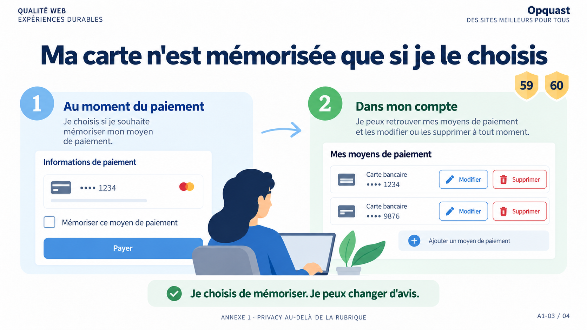
Lecture du visuel
Le parcours est présenté en deux temps. Au paiement, la case « Mémoriser ce moyen de paiement » est vide. Dans l’espace compte, les cartes mémorisées peuvent être modifiées ou supprimées. Les règles 59 et 60 relient consentement initial et maîtrise durable.
Textes visibles
- Ma carte n'est mémorisée que si je le choisis
- 1
- Au moment du paiement
- Je choisis si je souhaite mémoriser mon moyen de paiement.
- Mémoriser ce moyen de paiement
- Payer
- 2
- Dans mon compte
- Je peux retrouver mes moyens de paiement mémorisés et les supprimer à tout moment.
- Mes moyens de paiement
- Modifier
- Supprimer
- Ajouter un moyen de paiement
- 59
- 60
- Je choisis de mémoriser. Je peux changer d'avis.
- ANNEXE 1 · PRIVACY AU-DELÀ DE LA RUBRIQUE
Message à retenir
Le consentement initial se prolonge par la maîtrise des données mémorisées.
Mémoriser un moyen de paiement peut être pratique, mais ce choix doit venir de l’utilisateur. Et ce choix ne doit pas être irréversible : les données mémorisées doivent pouvoir être modifiées ou supprimées. Le consentement ne supprime pas les risques ; il donne à l’utilisateur la décision initiale.
Relier chaque règle à son impact : préjudices et risques
Se demander systématiquement quel préjudice subit l’utilisateur si la règle n’est pas appliquée.
Mémorisation bancaire non souhaitée, risque accru avec des données obsolètes ou impossibilité de retirer ces informations.
Ce que garantit la règle
Se demander ce que garantit la règle.
Un consentement explicite et une maîtrise durable des données bancaires mémorisées.
Mémo
Je choisis. Je peux changer d’avis.
Slide 19 - Newsletter : confirmer pour entrer, sortir simplement
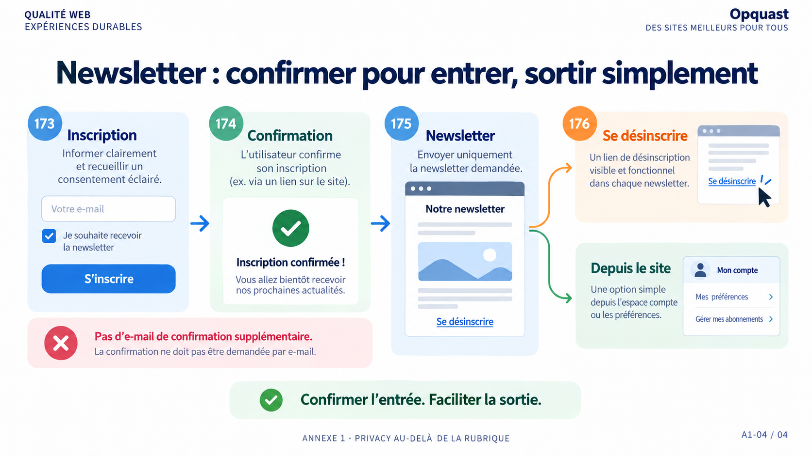
Lecture du visuel
Un parcours relie quatre règles : l’inscription et sa confirmation, l’envoi de la newsletter, puis la désinscription. La sortie est proposée par un lien dans chaque message et depuis le site. Une alerte précise qu’aucun courriel de confirmation supplémentaire ne doit être demandé.
Textes visibles
- Newsletter : confirmer pour entrer, sortir simplement
- 173
- Inscription
- Informer clairement et recueillir un consentement éclairé.
- Je souhaite recevoir la newsletter
- S’inscrire
- 174
- Confirmation
- L’utilisateur confirme son inscription (ex. via un lien sur le site).
- Inscription confirmée !
- 175
- Newsletter
- Envoyer uniquement la newsletter demandée.
- Se désinscrire
- 176
- Depuis le site
- Pas d’e-mail de confirmation supplémentaire.
- Confirmer l’entrée. Faciliter la sortie.
- ANNEXE 1 · PRIVACY AU-DELÀ DE LA RUBRIQUE
Message à retenir
L’inscription est vérifiée et deux voies simples permettent de se désinscrire.
À l’entrée, la confirmation évite qu’un tiers inscrive une adresse à l’insu de son propriétaire ou qu’une erreur de saisie passe inaperçue. À la sortie, le lien doit être présent dans chaque newsletter, la désinscription doit aussi être possible depuis le site et, depuis le lien reçu, on ne doit pas imposer un nouvel e-mail de confirmation. Une confirmation en ligne peut toutefois éviter une désinscription involontaire.
Relier chaque règle à son impact : préjudices et risques
Se demander systématiquement quel préjudice subit l’utilisateur si la règle n’est pas appliquée.
Spam subi, inscription erronée ou difficulté à arrêter les envois.
Ce que garantit la règle
Se demander ce que garantit la règle.
Une inscription confirmée et une sortie accessible, effective et sans étape e-mail inutile.
Mémo
Confirmer pour entrer. Pouvoir sortir simplement.